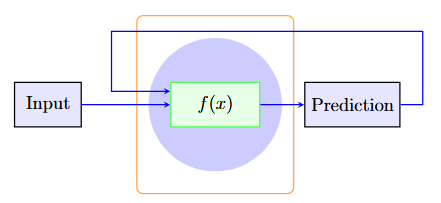

Problem Statement
Marine species monitoring through drone-based coastal surveys faces a critical challenge: adverse weather conditions frequently disrupt planned operations, leading to wasted resources and incomplete data collection. Traditional scheduling approaches rely on static weather forecasts that often fail to account for site-specific microclimates and temporal patterns.
The need for a more intelligent, data-driven approach to scheduling became apparent after spending time with the Biological Sciences team, which revealed that weather-related cancellations occurred in a great deal of scheduled flights, with significant variations between monitoring sites.
Methodology
We developed a dual LSTM architecture that processes historical time-series data from two coastal monitoring sites simultaneously. Each LSTM network learns site-specific weather patterns including wind speed, precipitation and solar irradiation.
The model architecture consists of:
- Parallel LSTM encoders for each site (128 hidden units)
- Fusion layer combining site forecasts
- Policy network outputting site recommendation and confidence score
Training data spanned over 40 years of hourly weather observations, with careful handling of missing data.
Results
The model achieved significant improvements in scheduling efficiency:
- To obtain the accuracy of the model at predicting the more favourable location under the specified recommendation policy, the predicted and actual outcomes were derived from the validation dataset.
- From this, the models performed at an accuracy of 68.07%
- This represents a 36% advantage over picking a site at average
Impact & Future Work
Implementation of the LSTM scheduling model in operational planning led to measurable improvements in survey efficiency. The research team reported increased data collection rates and better resource utilization, with drone operators able to plan multi-day campaigns with greater confidence.
Future directions include:
- Expanding to additional monitoring sites with transfer learning
- Incorporating real-time sensor data from deployed weather stations
- Developing a mobile application interface for field operators
- Exploring ensemble methods combining LSTM predictions with numerical weather models
The framework demonstrates how machine learning can optimize resource-constrained environmental monitoring operations, with potential applications extending to other weather-dependent field research activities.
Deep Learning
Artificial Neural Networks (ANNs) have gained popularity due to their ability to capture nonlinear relationships. Recurrent Neural Networks (RNNs), particularly Long Short-Term Memory (LSTM) networks, are especially suited for time-series forecasting because of their ability to capture dependencies over long time horizons. LSTMs address the vanishing gradient problem seen in traditional RNNs, enabling them to model complex, long-range temporal patterns that are characteristic of weather systems. While ANNs provide a flexible and powerful forecasting tool, they require large amounts of data and significant computational resources for training.
Traditional deep neural network, are designed to handle static input data by processing it through multiple layers of perceptrons. However, they are not well suited to model sequential or time-series data. This is where Recurrent Neural Networks (RNNs) come into play. RNNs are designed to recognise patterns in sequences by maintaining a form of memory through their hidden states, which allows them to better predict based on sequential movements.
The figure below illustrates how the RNN architecture works to predict sequential data. A input is passed through the model, f(x), and produces a prediction. This prediction is then fed back into f(x) to influence the prediction of following points.

However, standard RNNs face challenges such as vanishing and exploding gradients during training, which can hinder their ability to learn long-term patterns. The Long Short-Term Memory (LSTM) network, initially introduced by Hochreiter and Schmidhuber, addresses these issues by introducing a specialised architecture that includes memory cells and gating mechanisms. Within LSTM cells are three types of gates: input gates, forget gates, and output gates. They are used to regulate the flow of information into, out of, and within the memory cells. This architecture is what allows LSTMs to maintain and update information over long sequences, making them particularly effective for tasks involving long-term dependencies.
Data source
For this project to have maximum utility to the Biological Sciences Department, I needed to select locations that reflected the real sampling locations. From our experience in helping with drone flying, three main locations were used. These are reflected on the map in appendix A: Tāmaki Estuary (Tāmaki River), Pt. Chevalier and Ōmaha Lagoon (Whangateau Harbour). As the scope of this project is limited to training and comparing two locations, these were narrowed down to Pt. Chevalier and Ōmaha Lagoon.
The difficult part that followed is finding historical weather data for these locations that can be accessed. Metservice New Zealand has a very wide array of local weather stations, whose live data can be accessed easily from the Metservice website. However, there is no availability for downloading historic data from the weather stations.
NIWA (National Institute of Water and Atmospheric Research), however, offer a free online service, CliFlo. CliFlo serves as a useful front-end for sending queries to NIWA's database of 600 active and 6500 historic weather stations. An account is free to make and gives one access to 2,000,000 free rows of data. This is more than enough for the purposes of this project as this would represent over 2500 years of data over two locations before the threshold is met.
To send a query to the CliFlo database, a few steps must be taken. First, the required datatype must be specified. The `Daily and Hourly Observations' category is where land station data is collated, under which I used the `Combined Observations' and then the 9am daily observations.
Finding location data is done through the `choose station(s)' option. Upon clicking, a list of weather station locations can be filtered based on various parameters. What is important here is choosing the right station. Clicking on a station shows more information such as start date, end date and available data. For this project, the `Auckland, Motat Ews' (close to Pt. Chevalier, agent number 41351) and `Leigh 2 Ews' (close to Ōmaha Lagoon, agent number 1340) were used. These stations were chosen because of their proximity to the chosen locations, having enough predictive features as well as a long enough active history.
Implementation
Similar to the perceptron in a deep neural network, the LSTM cell replaces the perceptron. How the individual LSTM cell differs from the perceptron is that it take in sequential data. This means that an output isn't generated until the full time-series is passed through.
The diagram below shows how information might flow through a fully connected deep learning network. Detail is omitted in the LSTM cells, where for each time step we feed the output of the previous timestep subjected to a new weight, h(t). Further, this previous output is combined with the new data and the current timestep also. This is explained better in the section above.
A dense layer still exists. The purpose of this is to filter the output of the LSTM layer to an output, which is more interpretable. As the models get more complex, further LSTM layers might be added as well as other complexities that may work better at modelling our data source.